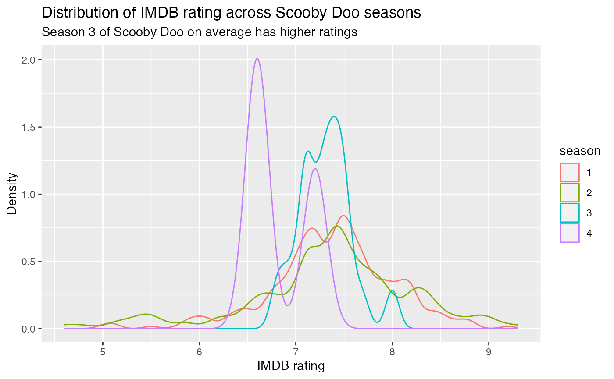
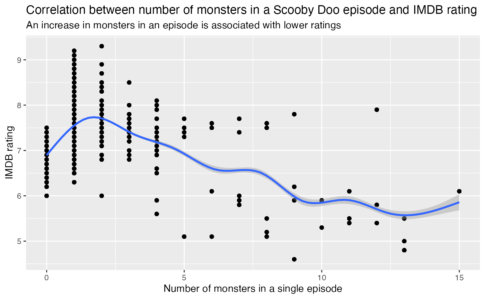
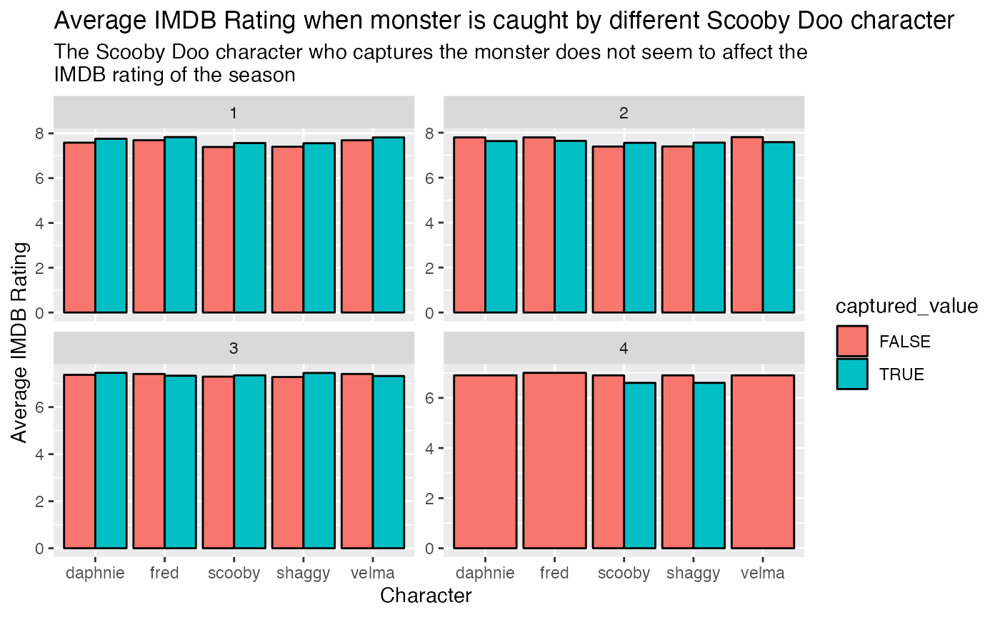

Example Analysis
my-vignette.Rmd
if(!dir.exists("../data")){
dir.create("../data")
}
if(!file.exists(here("../data", "scoobydoo.RDS"))){
tuesdata <- tidytuesdayR::tt_load('2021-07-13')
tuesdata <- tidytuesdayR::tt_load(2021, week = 29)
scoobydoo <- tuesdata$scoobydoo
saveRDS(scoobydoo, file=here("../data","scoobydoo.RDS"))
}Data
Data is from Scooby Doo TV series found in TidyTuesday along with its data dictionary: https://github.com/rfordatascience/tidytuesday/blob/master/data/2021/2021-07-13/readme.md
scoobydoo <- readRDS(here("../data", "scoobydoo.RDS"))
scoobydoo_long = scoobydoo %>%
mutate(across(starts_with("caught_"), as.logical),
across(starts_with("captured"), as.logical)) %>%
pivot_longer(cols = starts_with("caught_"),
names_to = "caught_by",
values_to = "caught_value") %>%
pivot_longer(cols = starts_with("captured_"),
names_to = "captured_by",
values_to = "captured_value") %>%
mutate(captured_by=str_remove(captured_by, "captured_"))Question: Is there a difference in IMDB rating across seasons?
scoobydoo_long$imdb=as.numeric(scoobydoo_long$imdb)
scoobydoo_long %>%
filter(season==c(1, 2, 3, 4)) %>%
ggplot(aes(x=imdb, color=`season`)) +
geom_density() +
labs(title="Distribution of IMDB rating across Scooby Doo seasons",
subtitle=str_wrap("Season 3 of Scooby Doo on average has higher ratings"),
x="IMDB rating",
y="Density")
Question: What is the correlation between number of monsters in a Scooby Doo episode and IMDB rating?
scoobydoo_long %>%
filter(season %in% c(1, 2, 3, 4)) %>%
ggplot(aes(x = monster_amount, y = imdb)) +
geom_point() + geom_smooth() +
labs(title="Correlation between number of monsters in a Scooby Doo episode and IMDB rating",
subtitle=str_wrap("An increase in monsters in an episode is associated with lower ratings"),
x="Number of monsters in a single episode",
y="IMDB rating")## `geom_smooth()` using method = 'gam' and formula = 'y ~ s(x, bs = "cs")'
Question: What is the average IMDB rating when different Scooby Doo characters catch the monsters?
summary_table <- scoobydoo_long %>%
filter(season %in% c(1, 2, 3, 4),
is.na(captured_value)==FALSE) %>%
group_by(season, captured_by, captured_value) %>%
summarize(avg_imdb = mean(imdb, na.rm = TRUE)) ## `summarise()` has grouped output by 'season', 'captured_by'. You can override
## using the `.groups` argument.
# Assuming your summary_table is named summary_table
ggplot(summary_table, aes(x = captured_by, y = avg_imdb, fill = captured_value)) +
geom_bar(stat = "identity", position = "dodge", color = "black") +
facet_wrap(~season, scales = "free_y", ncol = 2) +
labs(title = "Average IMDB Rating when monster is caught by different Scooby Doo character",
subtitle = str_wrap("The Scooby Doo character who captures the monster does not seem to affect the IMDB rating of the season"),
x = "Character ",
y = "Average IMDB Rating") 
Results and Interpretation
It does not seem to make a huge difference which Scooby Doo character captures the monster. Moreover, there is a negative association between IMDB ratings and # of monsters in an episode. Season 3 seems to have overall better ratings than the other seasons.
hello("ScoobyDoo")